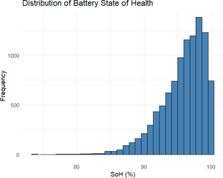
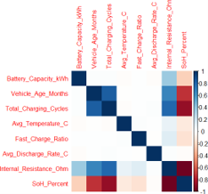
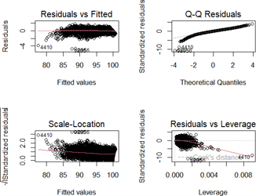
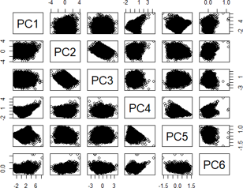
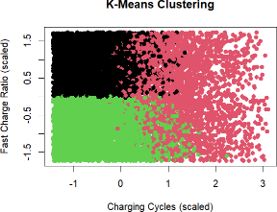

Statistical Analysis of EV Battery Degradation Using R
A statistical study of electric vehicle battery State of Health (SoH), investigating relationships between battery health, charging cycles, internal resistance and operating conditions using R programming.
Project Overview
Battery degradation is an important challenge in electric vehicles because declining battery health can affect vehicle range, reliability and operating costs. This project uses statistical analysis to investigate factors associated with battery State of Health and compare different modelling approaches.
The study examines charging cycles, vehicle age, temperature, fast-charging ratio and internal resistance, alongside multivariate analysis of battery usage patterns.
Objectives
- Analyse factors associated with battery State of Health.
- Develop statistical models to estimate battery health.
- Explore relationships between battery usage and degradation.
- Compare regression, classification and multivariate analysis techniques.
Methodology & Tools
Tools and Libraries
Language: R
Libraries: ggplot2, dplyr, factoextra and stats, with correlation visualization using corrplot.
Statistical Techniques
- Univariate analysis and descriptive statistics
- Bivariate analysis and correlation heatmaps
- Simple linear regression
- Multiple linear regression
- Logistic regression for battery-status classification
- Principal Component Analysis (PCA)
- K-means clustering
Results & Visualizations
Selected figures from the statistical analysis.





Key Findings
- The reported mean battery State of Health was 95.81%.
- Simple linear regression reported an R² of 0.7625 using total charging cycles.
- Multiple regression reported an R² of 0.9815 using five explanatory variables.
- Internal resistance was identified in the report as the strongest predictor of SoH.
- PCA and K-means clustering were used to explore multivariate patterns and battery groups.
These findings are based on the dataset and analyses described in the project report. Further validation using real-world data and unseen test data would be needed to establish general predictive performance.
Recommendations & Future Work
- Validate the analysis using real-world EV battery data.
- Evaluate model performance on unseen observations.
- Explore additional machine-learning models.
- Investigate long-term operating and environmental effects.
- Explore applications in battery monitoring and predictive maintenance.